最全Pycharm教程（4）——有关Python解释器的相关配置
最全Pycharm教程（6）——将Pycharm作为Vim编辑器使用
最全Pycharm教程（8）——Django工程的创建和管理
1、主题
这里我们着重介绍Pycharm如何帮助我们创建并运行一个基本的测试程序。至于如何编写具体的测试程序，参见之前的文章。
2、准备工作
确认你电脑上已经安装了Python解释器，2.4到3.3的版本均可。
3、创建一个简单的Python工程
在主菜单中，选择File | New Project
在创建工程对话框中，输入工程名称（这里暂定为TestSamples），选择工程类型（这里选择一个空的工程），并指定Python解释器版本：
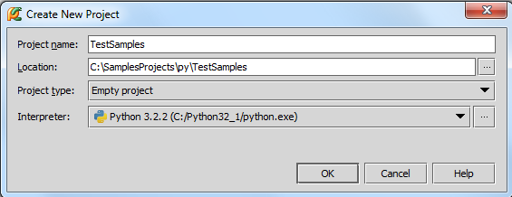
单击OK，选择显示工程所需窗口，这里我们选择第一个选项——在一个独立的新窗口打开我们的工程：
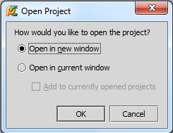
4、创建一个Python类
按下Alt+Insert，选择Python file：
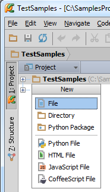
在新建Python对话框中，输入文件名称：
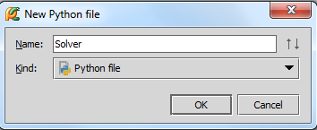
可以看到新建的Python文件中已经定义好了__author __以及__project__变量，接下来我们创建一个简单的脚本来实现解二次方程的功能：
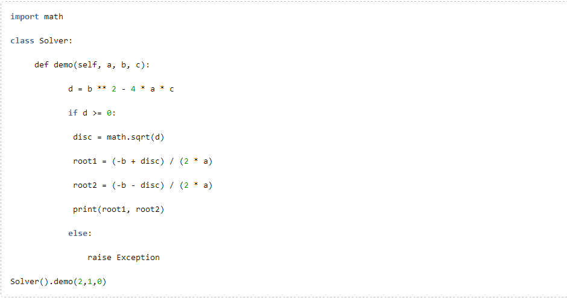
5、创建测试程序
右击类名，在快捷菜单中选择Go to | Test（也可以直接按Ctrl+Shift+T）：
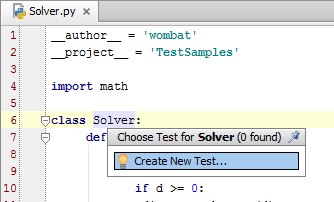
在Create test对话框中，输入路径和名称，勾选复选框中的test_demo函数选项：
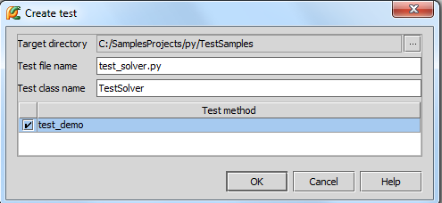
结果如下 ：
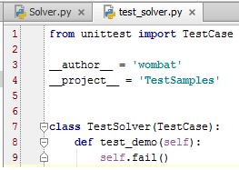
如你所见，所创建的测试程序满足Python unit testing framework标准——从unittest模块中导入响应的测试类，并将测试函数名称加上 “test”前缀。
然而，目前的测试单元只是一个基本的框架，需要进行修改。首先导入相关模块：
在输入时建议使用拼写提示功能，通过Ctrl+Space组合键，Pycharm将给出合适的模块及类名称提示：
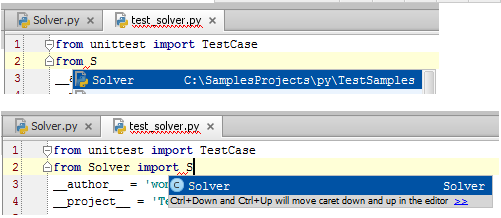
如果import声明的语句显示为灰色，则说明当前导入的模块还没有被使用。
接下来我们创建一个函数用来抛出判别式为负数的异常，向test类中加入以下代码：
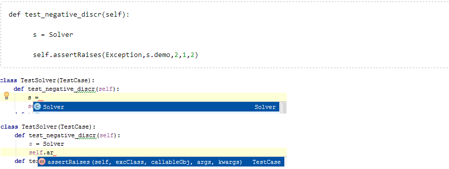
测试单元的最终代码如下：
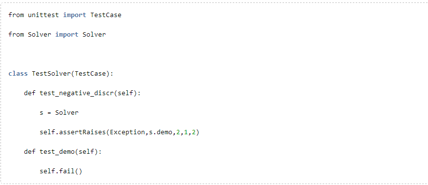
我们的测试方案包含两个测试方法：test_negative_discr and test_demo，当然后者通常不会被执行。
注意此时的import语句已经不再变灰色，因为我们已经在test_negative_discr函数中用到了Solver类。
6、创建测试方案的其他方法
让我们尝试其他方法来创建测试方案。按下Alt+Insert组合键，在弹出的菜单中选择Python file，接下来在New Python file对话框Kind中选择Python unit test选项，然后键入测试方案名称：
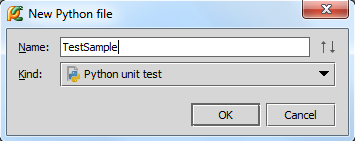
此时Pycharm会创建并初始化一个解决方案程序，打开并编辑它：
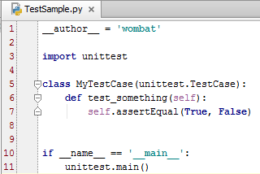
和之前的步骤类似，最终的测试代码为：
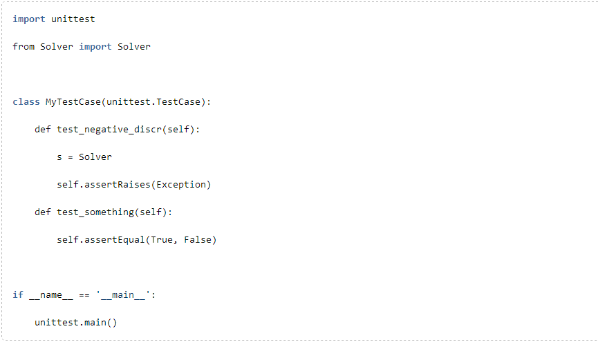
7、运行测试单元
为了执行我们的测试单元，Pycharm建议使用一个新的配置文件 run/debug configuration，这个配置模板已经是预先定义好的，我们直接使用即可。按下Ctrl+Shift+F10，或者在类内右击，选择Run unittests in test_solver：
运行结果如下：
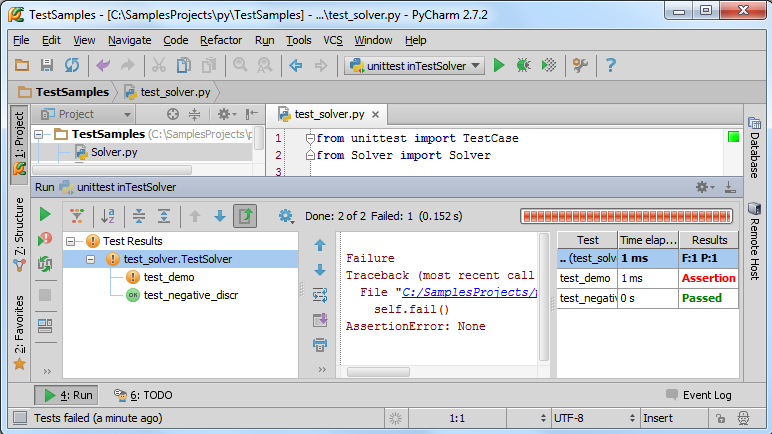